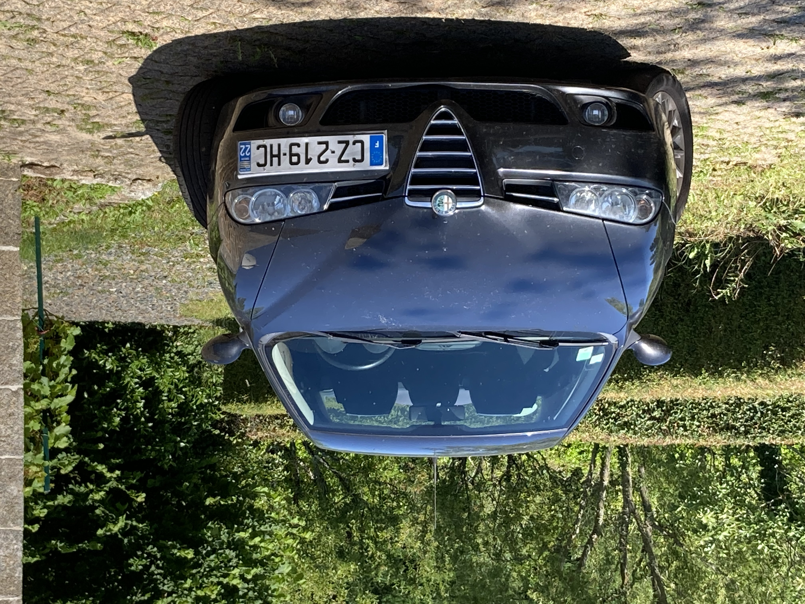

Some of my work recreating my Alfa Romeo 156
click here for the english version

JE DOIS TRADUIRE
This car's unique suspension setup and engine sound make it very engaging to drive, which is what I am attempting to replicate.
3D modeling


I made my own 3D model of the car from scratch because I wanted to learn 3D modeling, I wanted the result to be custom-made for Assetto Corsa, and there was no good 3D model of the car online to base my work on.
I used photoscanning to create a base for me to model over using Blender.
While I was more interested in modeling the physics, this car is truly beautiful, so it was important for me to accurately replicate its looks and I am satisfied with the result.


Here is a preview of the interior geometry. The same process of photoscanning is used.
Physics modeling


Modeling the physics of the car accurately is tricky because Fiat hasn't shared a lot of technical information on this car.
While I have to guess and estimate for some of the data, I try to base my modeling on measurements as much as possible.
The scan on the right was taken on an incline at a farm's axle weighing scale to calculate the height of the car's center of gravity.
I scanned my suspension as seen on the right to accurately model the suspension geometry.
This car has a unique setup of double-wishbone suspension in front, and a special multilink setup at the rear, giving it noticeable passive rear-wheel steering, which I hope to replicate in-game.
I taped my phone to the car and drove around, using its sensors to gather data on the car's pitch/roll under longitudinal and lateral acceleration.
Knowing the car's center of gravity height and suspension geometry, I hope to be able to approximate the front and rear wheel rate and anti-roll bar stiffness thanks to this data.


Conclusion
I have showed you all of this in the hope you can feel my passion for cars, driving dynamics, vehicle physics and racing games.I love Gran Turismo and I would be thrilled to interview for this internship.
- Contacts :
- bastian.cataldi@free.fr
- +33 7 83 79 67 25